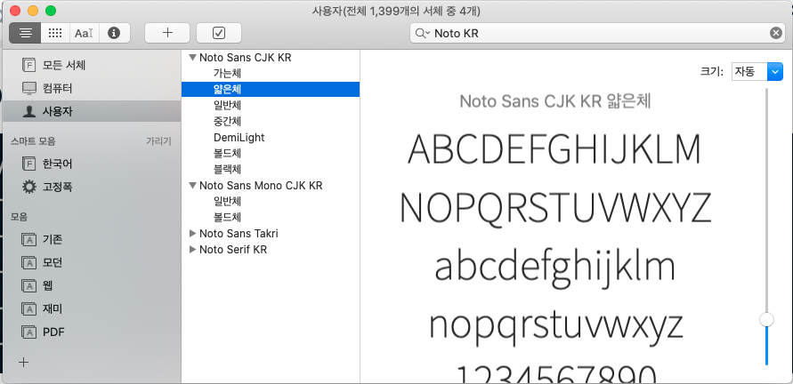

sysfonts 팩키지를 활용하여 폰트가 설치된 디렉토리와 파일을 확인할 수 있다. font_paths()를 통해 폰트가 설치된 디렉토리 확인이 가능하고, font_files() 함수를 통해 구체적으로 설치된 폰트를 확인한다.
library(tidyverse)
sysfonts::font_paths()[1] "C:\\Windows\\Fonts"sysfonts::font_files() %>%
as_tibble() %>%
filter(str_detect(family, pattern = "Nanum")) %>%
select(-version, -ps_name)# A tibble: 25 x 4
path file family face
<chr> <chr> <chr> <chr>
1 C:/Windows/Fon~ NanumBarunGothic.ttf NanumBarunGothic Regular
2 C:/Windows/Fon~ NanumBarunGothicBold.ttf NanumBarunGothic Bold
3 C:/Windows/Fon~ NanumBarunGothicLight.ttf NanumBarunGothic Light Light
4 C:/Windows/Fon~ NanumBarunGothicUltraLight~ NanumBarunGothic Ultra~ UltraLig~
5 C:/Windows/Fon~ NanumBarunpenB.ttf NanumBarunpen Bold Bold
6 C:/Windows/Fon~ NanumBarunpenR.ttf NanumBarunpen Regular
7 C:/Windows/Fon~ NanumBrush.ttf Nanum Brush Script Regular
8 C:/Windows/Fon~ NanumGothic.ttf NanumGothic Regular
9 C:/Windows/Fon~ NanumGothicBold.ttf NanumGothic Bold
10 C:/Windows/Fon~ NanumGothicCoding-Bold.ttf NanumGothicCoding Bold
# ... with 15 more rowsshowtext 팩키지 font_add() 함수를 통해 서체를 추가하고 font_families() 함수를 통해 확인한다.
library(showtext)
font_add(family = "NanumBarunpen",
bold = "NanumBarunpenB.ttf",
regular = "NanumBarunpenR.ttf")
font_families()[1] "sans" "serif" "mono" "wqy-microhei"
[5] "NanumBarunpen"showtext_auto() R 환경에서 나눔바른펜 폰트를 사용할 준비가 되었기 때문에 다음과 같이 ggplot에서 사용할 준비를 한다. faimly = NanumBarunpen으로 지정하고 fontface =를 달리하여 시각화를 한다.
# library(extrafont)
# loadfonts(device = "win")
korean_text <- "다람쥐 헌 쳇바퀴에 타고파"
ggplot(data = NULL) +
geom_text(
aes(x = 0, y = 1, label = korean_text),
family = "NanumBarunpen", size = 7) +
geom_text(
aes(x = 0, y = 2, label = korean_text),
family = "NanumBarunpen", fontface = "bold", size = 9) +
expand_limits(y = c(0, 3)) +
theme_void()Noto 폰트는 구글이 tofu 문제를 해결하고자 제시한 무료오픈 글꼴이다. 대표적으로 노토 산스와 노토 세리프 한글 글꼴을 제공하고 있어 이를 설치하여 활용하는 방법을 찾아보자.
먼저 Google Fonts 웹사이트에서 폰트를 다운로드 받아 로컬 컴퓨터 운영체제에 설치한다. GitHub Google Fonts 저장소를 통채로 콜론하여 사용자 맥 폰트 디렉토리 ~/Library/Fonts/에 저장한다. 전체 크기가 1.6 GB 이상되기 때문에 용량을 다소 차지한다. 업데이트된 폰트는 git pull 명령어를 통해 갱신한다.
# 모든 구글 폰트 설치
cd ~/Library/Fonts/
git clone https://github.com/google/fonts.git google-fonts
# 구글 폰트 업데이트
cd ~/Library/Fonts/google-fonts/
git pull
# 삭제
rm -rf ~/Library/Fonts/google-fonts/맥에서 “Font Book 앱”, “서체 관리자 앱”을 실행시켜 노토 폰트가 설치된 것을 확인한다.

윈도우에 노토 폰트를 설치하는 방법은 다운로드 받은 파일을 복사하여 c:\Windows\Fonts 디렉토리에 관리자 권한으로 복사해 넣는 것이다.
R에서 운영체제에 설치된 폰트를 설치하는 방법은 다음 세가지 팩키지가 있다.
extrafont: Winston Cheng이 개발했으며 TTF(.ttf) 포맷을 지원하는데 중점을 둠.showtext: TTF 외에도 OTF 등 다양한 폰트 포맷을 지원을 확대함.systemfonts: tidyglyphs 생태계 구축 중3extrafont 팩키지extrafont 폰트 팩키지 font_import() 함수를 사용해서 운영체제에 있는 글꼴을 R에서 사용할 수 있도록 설치할 수 있다. extrafont 팩키지는 Winston Cheng에 의해 개발되어 TTF를 지원하기 위해 사용된 것이라 .otf를 받지 않는다. 따라서 .otf → .ttf로 변환시킨 후에 font_import() 함수로 설치해야 된다.
library(extrafont)
# font_import(pattern="Noto Sans CJK KR Regular", prompt = FALSE)
# font_import(paths = "~/Library/Fonts/NotoSansCJKkr-Regular.otf", prompt = FALSE)
# font_import(path = "~/Library/Fonts", pattern = ".otf", prompt = FALSE)
# font_import(paths = "Noto Sans CJK KR", prompt = FALSE)
# font_import(paths = "Noto Sans Mono CJK KR", prompt = FALSE)showtextlibrary(tidyverse)
library(showtext)
# font_add_google("Noto Sans KR", family = "Noto Sans CJK KR")
sysfonts::font_add(family = "Noto Sans CJK KR",
regular = "NotoSansKR-Regular.otf",
bold = "NotoSansKR-Bold.otf")
ggplot(data = NULL) +
geom_text(
aes(x = 0, y = 1, label = korean_text),
family = "NanumBarunpen", size = 5) +
geom_text(
aes(x = 0, y = 2, label = korean_text),
family = "NanumBarunpen", fontface = "bold", size = 6) +
geom_text(
aes(x = 0, y = 3, label = korean_text),
family = "Noto Sans CJK KR", fontface = "plain", size = 7) +
geom_text(
aes(x = 0, y = 4, label = korean_text),
family = "Noto Sans CJK KR", fontface = "bold", size = 8) +
expand_limits(y = c(0, 5)) +
theme_void()systemfonts 팩키지systemfonts 팩키지 register_font() 함수를 사용해서 폰트를 등록할 수 있다.
library(systemfonts)
# systemfonts::register_font("Noto Sans CJK KR")
systemfonts::match_font("Noto Sans CJK KR")$path
[1] "C:\\Users\\statkclee\\AppData\\Local\\Microsoft\\Windows\\Fonts\\NotoSansCJKkr-Regular.otf"
$index
[1] 0
$features
NULL데이터 과학자 이광춘 저작
kwangchun.lee.7@gmail.com